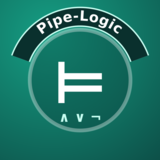

Pipe-Logic
Escribe lógica y matemáticas con los símbolos de verdad, con botones o al dictado, y calcula con lo escrito. Pensado para estudiar —nació con la asignatura de Lógica y Estructuras Discretas— y, como sus hermanas, para poder usarse sin manos.
- Los símbolos que no están en el teclado, a un toque:
¬ ∧ ∨ → ↔ ⊨ ∀ ∃ ∈ ⊆ ∪ ∩ ℕ ℝ ∑ ∫ √ π, índices y letras griegas. Escribe texto normal, que se copia y pega en cualquier sitio. - Al dictado: «pe and no cu implica erre» se escribe
p ∧ ¬q → r; «equis sub uno», «super dos», «tres coma catorce», «cuatro sobre dos»… El reconocimiento de voz va en tu ordenador, sin conexión. - Lógica: ¿está bien formada?, tabla de verdad, tautología o contradicción, equivalencia y consecuencia lógica con contraejemplo, árbol sintáctico, formas normales. Con las reglas del libro de la UNED.
- Cálculo exacto:
1 ÷ 3 = 1/3 (≈ 0,333333),√2 · √2 = 2. Nada de arrastrar aproximaciones: el decimal, solo al final. Combinatoria, divisibilidad, conjuntos. Lo que no se puede calcular dice «indeterminado» y por qué. - Álgebra: ecuaciones y sistemas, simplificar,
factorizar, derivar e integrar: «integral entre cero y pi de seno de
equis» da
2. - También en el móvil, con su app: se empareja con tu ordenador comparando un código que el ordenador dice en voz alta.
Versión 0.1.0, la primera. Para Linux; Windows vendrá después. Si se detectan fallos por uso, se agradece el reporte.
Descarga
- Paquete de instalación 0.1.0 (Linux, zip). Lleva dentro la app del móvil.
- App para Android (apk), por si la quieres sola.
- Manual en PDF, en español o en inglés. Accesible: se puede leer con lector de pantalla.
- Todas las versiones, en GitHub.
Cómo se instala
- Descomprime el zip y, en esa carpeta, ejecuta
./install.sh. Descarga el modelo de voz y te pregunta el micrófono y la dirección para el móvil. Si le falta algo al sistema, te dice qué instalar. - Arranca con
./pipelogic.sh --abrir. - En el móvil, instala la APK (con Archivos de Google), pon la dirección del ordenador y compara el código la primera vez.
Comprobar que la APK es la nuestra
Las dos huellas sirven para comprobar que lo descargado es lo nuestro y no una copia modificada. La segunda es la huella pública del certificado con el que se firman todas las versiones, la misma de las otras aplicaciones.
APK (0.1.0) SHA-256: 49800c6094fa4c67b6f3f6bfd0b5130ffb1e242f0d20904283c0ff8953351297
SHA-256: 40:EA:E6:CA:4A:6C:CE:5D:38:D6:61:A4:8D:9B:64:18:25:4F:01:3E:D7:75:83:4A:98:3B:E9:82:73:AF:C2:29
Privacidad
- Todo ocurre en tu ordenador: la voz se reconoce y los cálculos se hacen ahí, sin conexión.
- Del móvil al ordenador, cifrado, y solo con el ordenador con el que te emparejaste.
- Lo que escribes se queda en el navegador de cada aparato.
Requisitos
- Linux con Python 3.10 o más. El instalador dice qué falta.
- Para el móvil: Android 7 o superior.
- Conexión solo al instalar (descarga 120 MB de modelos).
Licencia y créditos
Pipe-Logic es software libre, © 2026 pipataki, con licencia LGPLv3. Usa Vosk y su modelo español (Alpha Cephei, Apache 2.0), sympy (BSD), Flask (BSD), Piper (GPLv3) con la voz «sharvard» (CC BY 3.0, Universidad de Edimburgo), y parte del código de VoiceController.
Sus hermanas: VoiceController para manejar el ordenador, Andro-Kontrol para el móvil y Pipe-Políglota para traducir.
Contacto
In English
Pipe-Logic is an editor for logic and mathematics with the real symbols, by buttons or by voice (in Spanish), that also calculates: truth tables, normal forms, exact arithmetic, equations, derivatives and integrals. It runs on your Linux computer, offline, with an Android companion app paired by a spoken code. Version 0.1.0. Download the package or read the manual in English. Free software, © 2026 pipataki, LGPLv3.